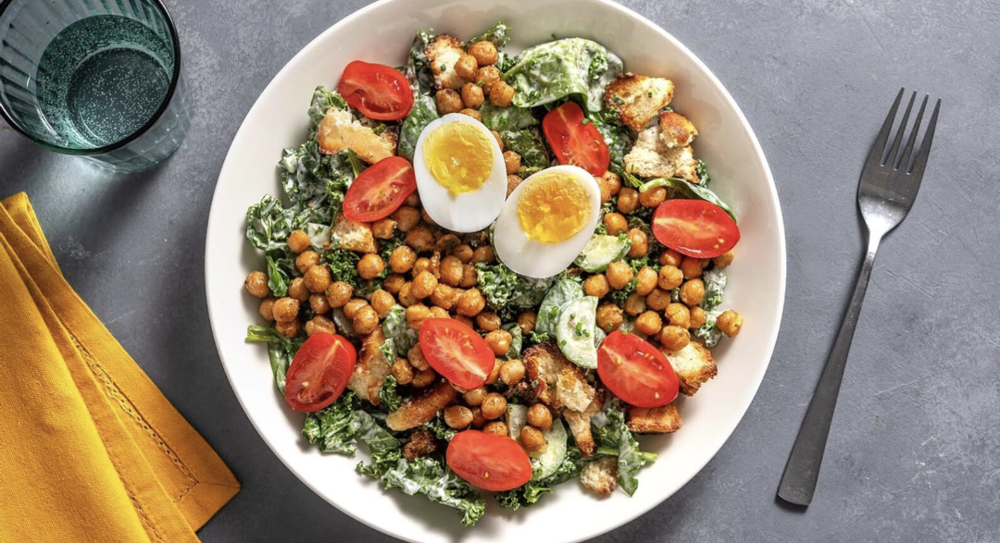

Breaded Halloumi Salad

Description
Excellent salad, perfect for halloumi-lovers. Who doesn't love halloumi?.
The recipe written serves 2. Ingredient amounts don't need to be exact for salads. For more servings, use entire packages of perishable ingredients from the grocery store (within reason) and combine according to taste. 1820 calories preparred.
Ingredients
- 200 g Halloumi Cheese
- 1 Egg
- 1/3 cup Panko Breadcrumbs
- 2 tbsp Apricot Spread
- 1 tsp Chilli Flakes
- 510 g Sweet Potato
- 80 g Roma Tomato
- 1 tbsp Middle Eastern Spice Blend
- 56 g Baby Spinach
- 1/2 tbsp White Wine Vinegar
- Oil
- Salt and Pepper
Steps
- Preheat the oven to 450°F. Wash and dry all produce. Start the recipe when the oven is ready. Cut sweat potatoes into 1/2 inch rounds.
- To a parchment-lined baking sheet, add sweet potatoes and 1 1/2 tbsp oil. Season with salt, pepper and half the Middle Eastern Spice Blend, then toss to coat. Roast sweet potatoes on the middle rack of the oven for 20-24 min, flipping halfway through, until tender.
- Meanwhile, rinse halloumi, then pat dry with paper towels. Cut into 1-inch cubes. In a shallow dish, combine Panko and remaining Middle Eastern Spice Blend. In a medium bowl, whisk egg until smooth. Add halloumi, then toss to coat. Working in small batches, remove halloumi from egg wash, allowing excess egg to return to the bowl. Coat halloumi in Panko mixture, then set aside. Repeat until all halloumi is coated.
- In a large non-stick pan, heat 1 tbsp oil over medium-high heat. When the pan is hot, add halloumi. Cook for 3-4 min, flipping occasionally, until golden-brown. Transfer halloumi to a plate and set aside.
- In a small pot, whisk together apricot spread, 1 tbsp water, and a pinch of chili flakes. Cook over medium-high for 1-3 min, stirring occasionally, until combined and warmed through.
- To a large bowl, add half the vinegar and 1 tbsp oil. Season with salt and pepper, then whisk to combine. Cut tomato into 1/4-inch wedges. To the bowl with dressing, add tomatoes and spinach, then toss to coat. Plate salad with halloumi 'croutons' over top, then drizzle with apricot sauce. Serve sweet potatoes alongside. Enjoy!